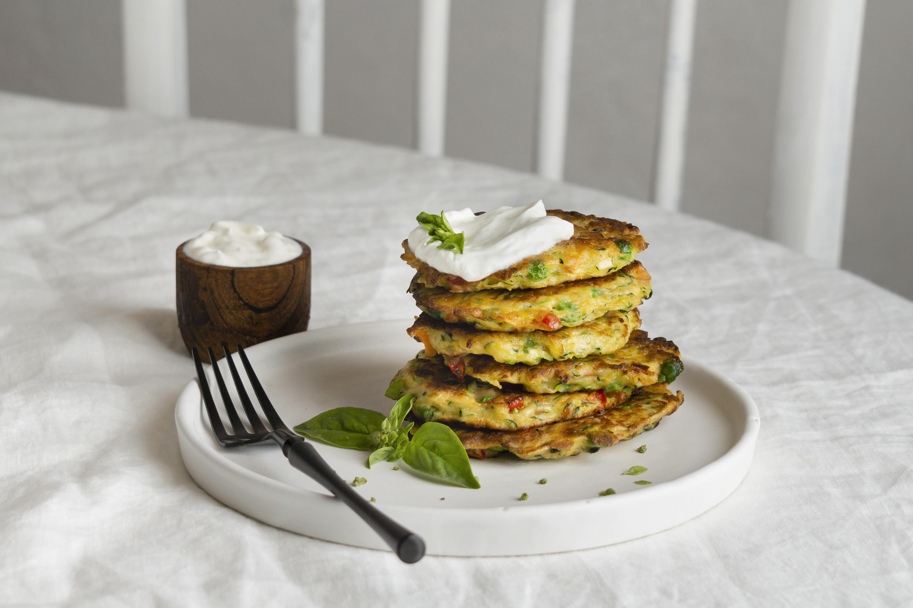

zuchinni pancake

Our banana bread is one of the most popular and well-reviewed videos I've ever posted.
When I got the idea to do banana bread pancakes, I decided to use that lovely loaf as
the base recipe.
Ingredient
- cooking spray
- 2 cups all-purpose flour
- ⅓ cup semisweet chocolate chips
- 1 teaspoon baking powder
- 1 teaspoon baking soda
- 1 teaspoon salt
- 1 cup white sugar
- ½ cup butter, softened
- 3 ripe bananas, mashed
- 2 large eggs
- 1 tablespoon milk
- ¼ teaspoon vanilla extract
- 1 cup chopped walnuts
Directions
how to prepare!!:)
- Preheat the oven to 325 degrees F (165 degrees C).Coat a 9x4-inch loaf pan with cooking spray
- Whisk together flour, baking powder, baking soda, and salt in a medium bowl; set aside.
- Beat together sugar and butter with an electric mixer in a large bowl until smooth. Add mashed bananas and mix until combined. Add eggs, one at a time, beating well after each addition. Stir in milk and vanilla.
- Stir in flour mixture, walnuts, and chocolate chips until just incorporated. Pour batter into the prepared loaf pan. Tap pan on the counter to release any air pockets.
- Bake in the preheated oven until a toothpick inserted into the center comes out clean, about 1 hour and 10 minutes. Let rest in the pan for 15 to 20 minutes. Remove bread from the pan, then slice and serve.